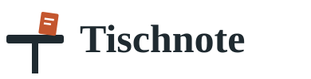

Logo-Entwürfe, zweite Runde
A Tisch mit Zettel

Das T ist ein Tisch, darauf steht ein Zettel: die Idee des Namens, wörtlich.
B Schild
Gesperrte Großbuchstaben mit Zierlinie, wie der Kopf einer Speisekarte. Nur Schrift.
C Siegel
Terrakotta-Siegel mit großem T. Kräftig und gut als Profilbild.
D Teller von oben
Abstrakter Teller mit Terrakotta-Mitte und einem Viertelbogen. Modern und ruhig.
E Blase als T
Eine Sprechblase in T-Form, mit drei Punkten für die Antwort auf eine Bewertung.